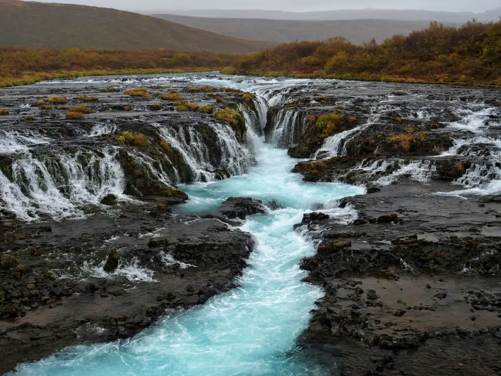
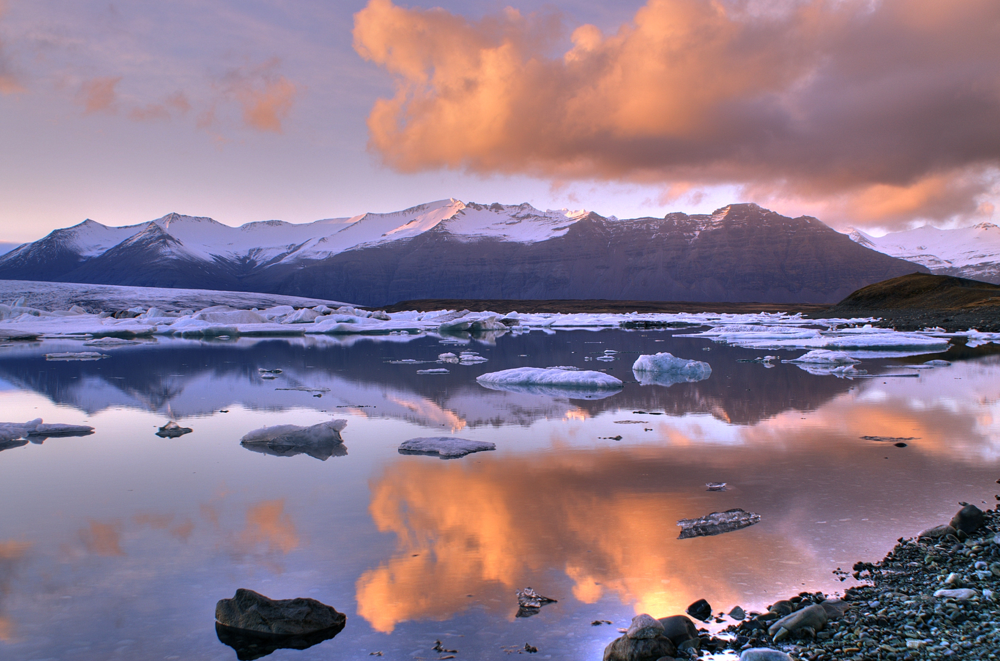
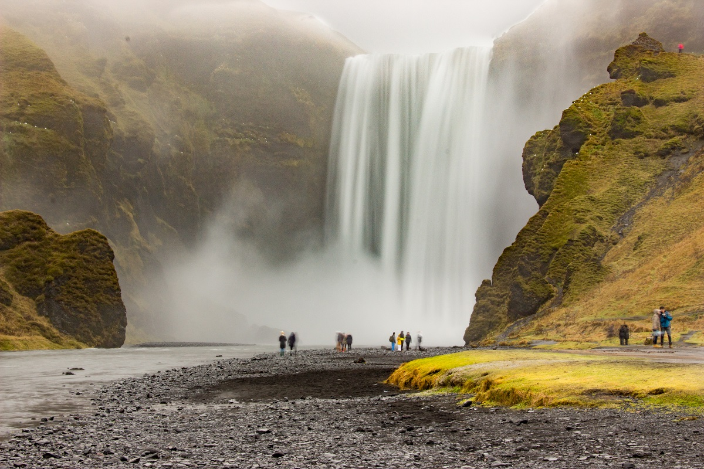

Présentation de l'Islande
L'Islande, située entre l'Europe et l'Amérique du Nord, est connue pour ses paysages époustouflants : glaciers majestueux, volcans actifs et geysers impressionnants. Sa capitale, Reykjavik, est la ville la plus septentrionale du monde, offrant une culture vibrante et une riche histoire.
Image du pays
Lieu à visiter
Le Cercle d'Or
Un itinéraire célèbre incluant le parc national de Þingvellir, la cascade de Gullfoss et le geyser de Strokkur.
Jökulsárlón
Cette lagune glaciaire est connue pour ses icebergs flottants et ses vues imprenables sur le glacier Vatnajökull.
Reykjavik
L'une des plus belles chutes d'eau d'Islande, Skógafoss est impressionnante avec ses 60 mètres de hauteur.